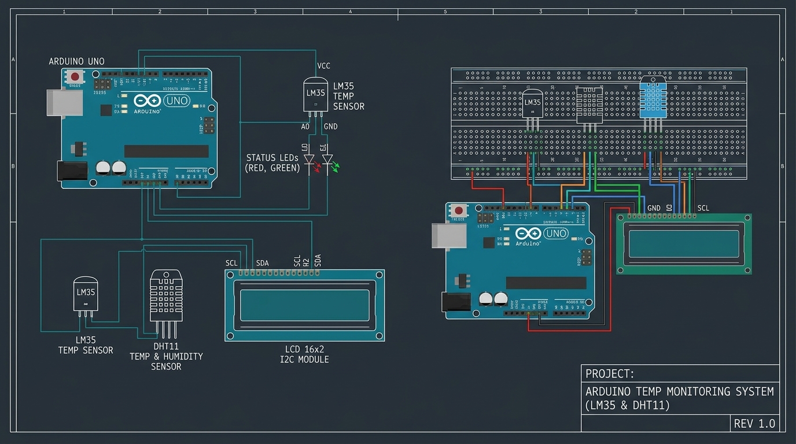

Quiero crear un sistema automatico que controle la températura usando Arudino, capaz de activar un ventilador o una resistencia segun el valor detectado por un sensor
Porque permite aplicar conocimientos de electronica para resolver un problema cotidiano que es mantener una temperatura estable en un entorno o dispositivo
Como funcionan los sensores de temperatura (DHT11, LM35), cómo controlar salidas digitales en Arduino y como mostrar datos en una pantalla LCD
Que el DTH11 mide temperaturay humedad, y que Arduino puede activar dispositivos mediante relés o transitores
Tutoriales de Arduino, documentación oficial y ejemplos de proyectos similares en foros educativos
Un circuito con Arduino UNO, sensor DTH11, pantalla LCD, ventiladory como mostrar datos desde una pantalla LCD
Lo imagino como un sistema compacto que detecta la temperatura y actúa automaticamente
mostrar la temperatura en pantalla y activar el ventialdor si supera los 26°c o la resistencia si baja 18°c
Arduino Uno
LM35 & DHT11
Display LCD 16x2 12c
Resistencias & LEDs
Conectando el sensor DTH11 al Arduino y probando lecturas básicas
La respuesta del sistema ante diferentes temperaturas
La activacion automática del ventilador y calefactor
Lecturas inestables del sensor y errores de conexión en la LCD
Mejoramos el cableado y añadimos un pequeño retardo en el codigo para estabilizar las lecturas
Funcional y estable, mostrando la temperatura y controlando los dispositivos correctamente
Mantener la temperatura dentro de un rango seguro y mostrar los valores en tiempo real
Sí, regula la temperatura automáticamente y evita daños por calor o frio
